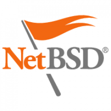
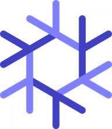
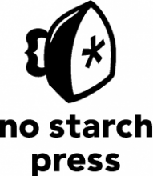
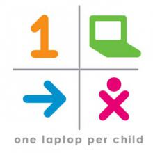
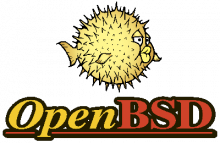

Nagios is the Industry Standard in IT Infrastructure Monitoring providing monitoring of all mission-critical infrastructure components including applications, services, operating systems, network protocols, systems metrics, and network infrastructure. Nagios is the most powerful and trusted IT infrastructure monitoring solution in the known universe.
Exhibitors
Exhibit Hall Hours:
Friday Jan 22nd 2pm - 6pm
Saturday Jan 23rd 10am - 6pm
Sunday Jan 24th 10am - 2pm

NetBSD is a free, secure, and highly portable Unix-like Open Source operating system available for many platforms, from large-scale server systems to powerful desktop systems to handheld and embedded devices. Its clean design and advanced features make it excellent in both production and research environments, and the source code is freely available under a business-friendly license.
NetBSD is developed and supported by a large and vivid international community. Many applications are easily available through pkgsrc, the NetBSD Packages Collection.

NixOS is a GNU/Linux distribution that aims to improve the state of the art in system configuration management. In existing distributions, actions such as upgrades are dangerous: upgrading a package can cause other packages to break, upgrading an entire system is much less reliable than reinstalling from scratch, you can’t safely test what the results of a configuration change will be, you cannot easily undo changes to the system, and so on. We want to change that. NixOS has many innovative features:

Founded in 1994, No Starch Press is one of the few remaining independent technical book publishers. We publish the finest in geek entertainment—unique books on technology, with a focus on Open Source, security, hacking, programming, alternative operating systems, and LEGO. Our titles have personality, our authors are passionate, and our books tackle topics that people care about. See www.nostarch.com for a complete catalog.
Gold Sponsor
O’Reilly Media spreads the knowledge of innovators through its books, online services, magazines, research, and conferences. Since 1978, O’Reilly has been a chronicler and catalyst of leading-edge development, homing in on the technology trends that really matter and galvanizing their adoption by amplifying “faint signals” from the alpha geeks who are creating the future. An active participant in the technology community, the company has a long history of advocacy, meme-making, and evangelism.

One Laptop per Child is a non-profit initiative established with the goal of creating and distributing educational devices for the developing world.
Silver Sponsor
Omnibond is a technology development company currently focused on software engineering and support for networked Identity/Access Management, Parallel Virtual File Systems, and Computer Vision technologies. Omnibond offers commercial-grade product services for OrangeFS, the next generation of PVFS for high-performance computing as well as Big Data. We are committed to open source development.
One Course Source, Inc. began as a courseware development company. Drawing on years of courseware design, OCS developed and distributed courseware to training sites and classrooms with the major focus primarily on Open Source technologies, including Linux, UNIX, Perl, Python and Tcl. After years of successful courseware development, One Course Source branched out to provide other products and services related to training.

The OpenBSD project produces a FREE, multi-platform 4.4BSD-based UNIX-like operating system. The project's efforts emphasize portability, standardization, correctness, proactive security and integrated cryptography.
Gold Sponsor
The OpenNMS Group is the corporate entity behind the award winning 100% free and open source OpenNMS enterprise grade network management application platform. They provide commercial consulting, support, training and custom development services in addition to acting as maintainers for the project